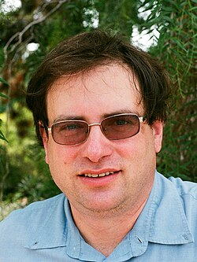

Elon Lindenstrauss | |
|---|---|
אילון לינדנשטראוס | |
 Lindenstrauss in Berkeley, 2014 | |
| Born | August 1, 1970 |
| Alma mater | Hebrew University of Jerusalem (BSc, MSc, PhD) |
| Awards |
|
| Scientific career | |
| Fields | Mathematics |
| Institutions | Hebrew University of Jerusalem Princeton University Institute for Advanced Study |
| Benjamin Weiss | |
Elon Lindenstrauss (Hebrew: אילון לינדנשטראוס; born August 1, 1970) is an Israeli mathematician, and a winner of the 2010 Fields Medal.[1][2]
Since 2004, he has been a professor at Princeton University. In 2009, he was appointed as a Professor at the Einstein Institute of Mathematics at the Hebrew University. In 2024 he was appointed a permanent faculty member in the School of Mathematics of the Institute for Advanced Study.[3]
Lindenstrauss was born into an Israeli-Jewish family with German Jewish origins, the son of the mathematician Joram Lindenstrauss, the namesake of the Johnson–Lindenstrauss lemma, and computer scientist Naomi Lindenstrauss, both professors at the Hebrew University of Jerusalem. His sister Ayelet Lindenstrauss is also a mathematician. He attended the Hebrew University Secondary School. In 1988 he was awarded a bronze medal at the International Mathematical Olympiad. He enlisted to the IDF's Talpiot program and studied at the Hebrew University of Jerusalem, where he earned his BSc in Mathematics and Physics in 1991 and his master's degree in mathematics in 1995. In 1999 he finished his Ph.D., his thesis being "Entropy properties of dynamical systems", under the guidance of Prof. Benjamin Weiss. He was a member at the Institute for Advanced Study in Princeton, New Jersey, then a Szego Assistant Prof. at Stanford University. From 2003 to 2005, he was a Long Term Prize Fellow at the Clay Mathematics Institute.
In Fall 2014, he was a Visiting Miller Professor at the University of California, Berkeley.[4] Lindenstrauss is an editor for Duke Mathematical Journal and Journal d'Analyse Mathématique.[5][6]
Lindenstrauss works in the area of dynamics, particularly in the area of ergodic theory and its applications in number theory. With Anatole Katok and Manfred Einsiedler, he made progress on the Littlewood conjecture.[7]
In a series of two papers (one co-authored with Jean Bourgain) he made major progress on Peter Sarnak's Arithmetic Quantum Unique Ergodicity conjecture. The proof of the conjecture was completed by Kannan Soundararajan.
Recently with Manfred Einsiedler, Philippe Michel and Akshay Venkatesh, he studied distributions of torus periodic orbits in some arithmetic spaces, generalizing theorems by Hermann Minkowski and Yuri Linnik.
Together with Benjamin Weiss he developed and studied systematically the invariant of mean dimension[8] introduced in 1999 by Mikhail Gromov.[9] In related work he introduced and studied the small boundary property and stated fundamental conjectures.[10]
{kind=link}